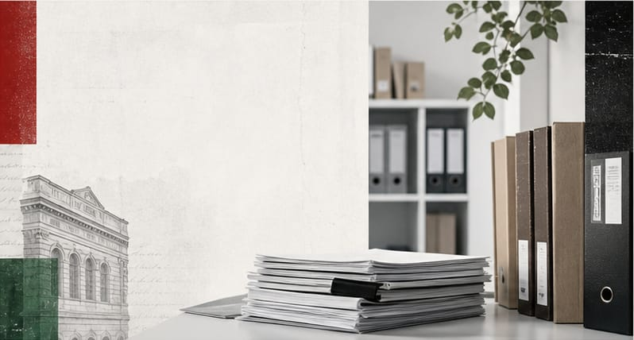

Sajtó és nyilvánosság
Támogatjuk azokat a kezdeményezéseket, amelyek a hiteles, sokszínű és demokratikus nyilvánosság megszervezését, fenntartását, értelmezését és megerősítését szolgálják.

Az Alapítvány
A Szabad Sajtó Alapítvány a demokratikus tájékozódás, a szabad sajtó, a médiatudatosság és a közéleti részvétel megerősítéséért dolgozik.

Bemutatkozás
A Szabad Sajtó Alapítvány közéleti és kulturális célú alapítvány, amely a magyar sajtószabadság, a független és fenntartható újságírás, valamint a demokratikus nyilvánosság hagyományához kapcsolódik.
A szabad, sokszínű és hiteles sajtó nem pusztán szakmai kérdés. A nyilvánosság minősége közvetlenül hat arra, hogy az állampolgárok mennyire tudnak tájékozódni, részt venni a közös döntésekben, felismerni a manipulációt, és megérteni a társadalmi-politikai folyamatokat.
Alapítványunk 2026-ban újraindított munkája épít a korábbi hagyományokra és figyel a múlt tapasztalataira, miközben elsődleges célja, hogy hozzájáruljon a XXI. századi médiakörnyezet kihívásainak értelmezéséhez és kezeléséhez. A sajtószabadság ügye ma elválaszthatatlan az online nyilvánosságtól, a közösségi média működésétől, a dezinformációval szembeni ellenálló képességtől, az algoritmusok szerepétől, a platformok erejétől és attól is, hogy a polgárok milyen eszközöket kapnak a kritikus tájékozódáshoz.
Céljaink
Az Alapítvány céljai között kezdettől szerepel a társadalmilag értékes, de gazdaságilag nehezen fenntartható lapok és időszaki kiadványok támogatása, a fiatal újságírók – köztük a határon túli magyar újságírók – elismerése és támogatása, a nehéz helyzetbe került újságírók megsegítése, valamint társadalmi és kulturális kérdésekkel foglalkozó tanulmányok, elemzések ösztönzése.
Célunk az újságírói pálya iránt érdeklődőknek szóló média-, újságírás- és közösségimédia-képzések elérhetővé tétele. Támogatni kívánjuk a demokratikusan politizáló és művelődni kívánó közösségeket, a baloldali és szociáldemokrata eszme- és értékrendszer megismertetését, valamint a társadalmi és politikai kérdésekről való állampolgári tájékozódás szélesítését.
Támogatjuk azokat a kezdeményezéseket, amelyek a hiteles, sokszínű és demokratikus nyilvánosság megszervezését, fenntartását, értelmezését és megerősítését szolgálják.
Képzéseket, oktatási programokat és szakmai találkozókat készítünk elő a média, az újságírás, a közösségi média és a kritikus tájékozódás területén.
Gondozzuk, láthatóvá tesszük és megújítva visszük tovább a Szabad Sajtó-díjat.
Pályázati úton és saját szervezésben is keressük azokat a gondolatokat, embereket, elemzőket és közösségeket, akik javaslataikkal, terveikkel és ötleteikkel hozzájárulnak a magyar nyilvánosság hosszabb távú megújításához, valamint egy egészséges, fenntartható és demokratikus XXI. századi médiapolitika kialakításához.
Kuratórium
Az Alapítvány munkáját háromtagú kuratórium irányítja. A kuratórium feladata az Alapítvány céljainak megvalósítása, a programok szakmai kereteinek kijelölése és az alapítványi források felelős felhasználása.
Kuratóriumi elnök
Dr. Harangozó Tamás jogász és közéleti szereplő. Országgyűlési képviselőként és politikai vezetőként hosszú ideje foglalkozik demokratikus intézményekkel, közpolitikai kérdésekkel és közéleti képviselettel. A Szabad Sajtó Alapítvány kuratóriumi elnökeként az Alapítvány stratégiai megújításának, szakmai kapcsolatainak és hosszabb távú programjainak kialakításában vesz részt.
Kuratóriumi tag
Agócs Ádám közéleti és politikai háttérmunkával, kommunikációval, kampányokkal, szervezeti folyamatokkal és adatvezérelt döntéstámogatással foglalkozó szakember. A Szabad Sajtó Alapítvány kuratóriumi tagjaként az Alapítvány újraindítását, digitális jelenlétét, programfejlesztését és közösségi kapcsolatainak építését segíti.
Kuratóriumi tag
Kádi Csaba közéleti és kommunikációs területen szerzett tapasztalatot. A Szabad Sajtó Alapítvány kuratóriumi tagjaként az intézményi működés, a kapcsolatok építése és az Alapítvány programjainak előkészítése területén vesz részt a közös munkában.
Dokumentumok
Az Alapítvány működésének alapját az alapító okirat és annak hatályos módosításai adják. A nyilvános dokumentumok innen tölthetők le.
Az Alapítvány egységes szerkezetbe foglalt alapító okirata.